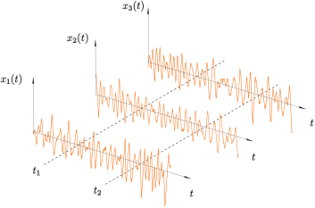

Osnove naključnih procesov
Contents
Osnove naključnih procesov#
Dinamične obremenitve pogosto niso deterministične; primeri naključnih obremenitve so: obremenitve zaradi morskih valov, hrapavost ceste in vibracije zaradi pogonskega motorja. Take obremenitve je treba obravnavati kot naključne procese. V tem poglavju si bomo pogledali kako to naredimo in kako jih potem uspešno uporabimo pri obravnavi dinamskih sistemov.
Naključnih podatkov v nasprotju z determinističnimi podatki ni mogoče natančno predvideti, določene značilnosti pa lahko razberemo z analizo njihovih segmentov; če na primer pomerimo hrapavost segmenta površine, lahko z določeno verjetnostjo sklepamo o značilnostih hrapavosti drugih segmentov. Pri opisu naključnih procesov si pogosto pomagamo s predpostavko porazdelitve procesa (npr. normalno porazdeljen proces).
Medtem ko bi lahko naključni proces analizirali v časovni domeni, obstajajo pomanjkljivosti za uporabo takega pristopa. Za ustrezno vrednotenje procesa je treba v časovni domeni opraviti dovolj veliko število vzorčnih meritev (ali opazovanj), ki jih nato analiziramo kot skupino (ansambel, ang. ensemble). Kakor bomo videli pozneje, je strukturno dinamiko in naključne procese v frekvenčni domeni bistveno elegantneje analizirati.
Referenčna besedila, ki poglobljeno obravnavajo to temo, ki jih priporočajo bralcu, so Bendat and Piersol [2011], Newland [2012] ter Shin and Hammond [2008]. Nekatere vsebine so povzete po Slavič et al. [2020].
Kaj je naključni proces?#
Naključni proces je definiran s kombinacijo funkcije gostote verjetnosti (ang. Probability Density Function - PDF) in spektralno gostoto moči (ang. Power Spectral Density - PSD).
Slika spodaj prikazuje ansambel \(\left\{x_k(t)\right\}\) vzorčnih funkcij (opazovanj) \(x_k(t)\), pri čemer je vsako opazovanje \(k\) sestavljeno iz naključne spremenljivke v času \(t_i\): \(x_k(t_i)\). Kot bo obravnavano kasneje, predpostavki o stacionarnosti in ergodičnosti bistveno poenostavijo analizo naključnih podatkov (več pozneje).

Normalna porazdelitev (Gaussov proces)#
Gaussova porazdelitev je pogosto opažena pri različnih fizikalnih pojavih, njeno razširjenost pa pojasnjuje centralni limitni teorem (glejte Bendat and Piersol [2011]. Na splošno je Gaussov proces tisti, pri katerem verjetnost kombinacije naključnih spremenljivk ob določenih časih \(\left\{x(t_i)\right\}\) sledi večdimenzionalni Gaussovi porazdelitvi. Če pogledamo samo en trenutek v času \(t\), verjetnost amplitude \(x\) ureja normalna funkcija gostote verjetnosti (PDF) \(p(x)\):
Tukaj je \(\mu\) povprečna vrednost, \(\sigma\) je standardni odklon (deviacija) oziroma \(\sigma^2\) varianca. Srednja vrednost \(\mu\) in varianca \(\sigma^2\) določata obliko PDF in se pogosto imenujeta prvi moment in drugi centralni moment; izračunamo ju s pomočjo funkcije gostote verjetnosti:
Primer različnih normalnih porazdelitev prikazuje slika spodaj.
import sympy as sym
σ, μ, x, = sym.symbols('\sigma, \mu, x', real=True)
π = sym.pi
p = 1/(σ*sym.sqrt(2*π)) * sym.exp(-(x-μ)**2/(2*σ**2))
podatki = {σ: 1., μ: 0.}
p1 = sym.plot(p.subs(podatki), (x, -3*σ.subs(podatki), +3*σ.subs(podatki)), line_color='C0',
label=f'$\\mu={μ.subs(podatki):3.2f}, \\sigma={σ.subs(podatki):3.2f}$', show=False,
title='Porazdelitev verjetnosti', ylabel='$p(x)$', xlabel='$x$')
podatki = {σ: 0.5, μ: 0.}
p2 = sym.plot(p.subs(podatki), (x, -5*σ.subs(podatki), +5*σ.subs(podatki)), line_color='C1',
label=f'$\\mu={μ.subs(podatki):3.2f}, \\sigma={σ.subs(podatki):3.2f}$', show=False)
podatki = {σ: 0.5, μ: 0.5}
p3 = sym.plot(p.subs(podatki), (x, -5*σ.subs(podatki), +5*σ.subs(podatki)), line_color='C2',
label=f'$\\mu={μ.subs(podatki):3.2f}, \\sigma={σ.subs(podatki):3.2f}$', show=False)
p1.extend(p2)
p1.extend(p3)
p1.legend = True
p1.show()

S spodnjim izračunom lahko preverimo, da sta prvi moment in drugi centralni moment za Gaussovo/normalno porazdelitev dejansko \(\mu\) in \(\sigma^2\):
import sympy as sym
σ, μ, x, = sym.symbols('\sigma, \mu, x', real=True, positive=True)
π = sym.pi
p = 1/(σ*sym.sqrt(2*π)) * sym.exp(-(x-μ)**2/(2*σ**2))
m1 = sym.integrate(x*p, (x, -sym.oo, +sym.oo))
cm2 = sym.integrate((x-μ)**2 * p, (x, -sym.oo, +sym.oo))
m1
cm2
Spodaj je še primer numeričnega generiranja normalne porazdelitve in primerjava s teoretično funkcijo gostote verjetnosti.
import numpy as np
import matplotlib.pyplot as plt
import sympy as sym
σ, μ, x, = sym.symbols('\sigma, \mu, x', real=True, positive=True)
π = sym.pi
p = 1/(σ*sym.sqrt(2*π)) * sym.exp(-(x-μ)**2/(2*σ**2))
podatki = {σ: 1., μ: 0.}
pdf = sym.lambdify(x, p.subs(podatki))
rng = np.random.default_rng(0)
x = rng.normal(loc=podatki[μ], scale=podatki[σ], size=5000)
plt.plot(x, '.')
plt.xlabel('Naključni dogodek')
plt.ylabel('Vrednost $x$')
plt.show()
plt.hist(x, bins=50, density=True, label='Gostota verjetnosti - histogram')
x = np.linspace(-3*podatki[σ],3*podatki[σ], 100)
plt.plot(x, pdf(x), label='Funkcija gostote verjetnosti')
plt.legend()
plt.show()


Momenti funkcije gostote verjetnosti#
V nadaljevanju si bomo pogledali orodja za popis lastnosti naključnih procesov. Predpostavimo, da imamo dva naključna procesa \(\left\{x_k(t)\right\}\) in \(\left\{y_k(t)\right\}\), kjer je \(k\) indeks ponovitve procesa ob času \(t\). Statistično povprečje celotnega ansambla ponovitev procesa (čez indeks \(k\)) označimo kot (\(E[]\) označuje pričakovano vrednost/posplošeno povprečje, ang. expected value, glejte tudi povezavo):
Povprečje se lahko spreminja s časom \(t\).
Note
Zgornji izraz posplošimo tako, da definiramo \(n\)-ti moment funkcije gostote verjetnosti:
Kovariančne funkcije so za dva procesa definirane \(\left\{x_k(t)\right\}\) in \(\left\{y_k(t) \right\}\) kot:
Poseben primer, vreden pozornosti, je pri \(\tau = 0\):
Varianci \(\sigma_x^2(t)\) in \(\sigma_y^2(t)\) sta tako definirani in \(C_{xy}(t)\) je kovarianca med \(\left \{x_k(t)\right\}\) in \(\left\{y_k(t)\right\}\) ob času \(t\).
Če bi analizirali proces z dvodimenzionalno normalno porazdelitvijo, bi bile lastnosti \(\sigma_x^2(t)\), \(\sigma_y^2(t)\) in \(C_{xy}(t)\) dovolj za popis verjetnosti v določenih časovnih točkah \(t\).
Note
Zgornji izraz posplošimo tako, da definiramo \(n\)-ti centralni moment funkcije gostote verjetnosti:
Note
Za naključna procesa \(\left\{x_k(t)\right\}\) in \(\left\{y_k(t)\right\}\) pravimo, da sta šibko stacionarna, ko so srednje vrednosti in kovariančne funkcije časovno neodvisne. Procesi se štejejo za močno stacionarne, ko so časovno neodvisni tudi statistični momenti višjega reda in križni momenti. Šibka in močna stacionarnost sovpadata za Gaussov proces (funkcijo porazdelitve verjetnosti je mogoče izpeljati samo iz srednjih vrednosti in kovarianc [Newland, 2012]).
Note
Auto-korelacijska \(R_{xx}(\tau)\) in križno-korelacijska funkcija \(R_{xy}(\tau)\) se uporabljajo za stacionarne naključne procese in je enaka kovariančnim funkcijam v primeru procesa z ničelno srednjo vrednostjo:
Ergodičnost#
Namesto, da srednjo vrednost določamo čez ansambel dogodkov, lahko srednjo vrednost določimo na podlagi časovnega povprečja:
Preprosto povedano: če bi hkrati vrglo igralno kocko za Človek ne jezi se 1000 ljudi, bi dobili zelo podoben rezultat kakor pa, če bi ena oseba vrgla kocko 1000 krat. Pri tem moramo predpostaviti, da zaporedni dogodki v času (ko meče ena oseba) niso med seboj povezani. V zgornji enačbi tako opazujemo \(k\)-ti proces v času.
Podobno lahko trdimo za kovariančno funkcijo:
Note
Proces rečemo, da je šibko ergodičen (ang. weakly ergodic), če so časovna povprečja enaka povprečjem ansambla dogodkov, neodvisno od izbranega \(k\):
Če pogoji šibke ergodičnosti veljajo za vse statistične lastnosti višjega reda, je proces močno ergodičen (ang. strongly ergodic). Za Gaussovo porazdelitev pa sta močna in šibka ergodičnost zamenljiva izraza, kot je bilo v primeru stacionarnosti - prvi moment in drugi centralni moment sta dovolj za enolični opis Gaussove porazdelitve. V takih primerih so statistične lastnosti vsake ločene vzorčne funkcije reprezentativne za celoten ansambel. Pri nadaljnji analizi ergodičnih procesov lahko torej indeks \(k\) izpustimo in vzorčno funkcijo, ki v celoti opisuje lastnosti naključnega procesa, označimo z \(x(t)\).
Ergodičnost je pomembna iz različnih razlogov: poenostavlja nadaljnjo teoretično obravnavo naključnih procesov; še pomembneje pa je, da omogoča analizo dejansko izmerjenih naključnih podatkov. Namesto analize velikega ansambla časovnih zgodovin pri istem času \(t\), običajno zadostuje, da si ogledamo eno samo časovno zgodovino in na podlagi predpostavke ergodičnosti izluščimo iz nje potrebne statistične lastnosti.
V strukturni dinamiki ponavadi predpostavimo, da ima proces ničelno povprečje in je zato varianco \(\sigma_x^2\) za takšen primer mogoče izračunati na različne načine:
V zgornjih izrazih je predpostavljeno, da \(x(t)\) predstavlja periodične podatke s periodo \(T\). S \(S_{xx}(f)\) smo označili spektralno gostoto moči (ang. power spectral density) in smo se v tej vrstici naslonili na Parsevalov teorem (glejte: Parsevalov teorem in močnostni spekter). V naslednjem poglavju si bomo spektralno gostoto moči pogledali bolj podrobno. Opomba: če obravnavamo normalno porazdeljeni proces z ničelno srednjo vrednostjo, je varianca edini manjkajoči parameter, ki tako porazdelitev enolično določi.
Spektralna gostota moči (PSD)#
Spektralna gostota moči opisuje frekvenčno gostoto moči naključnega procesa in dopolnjuje funkcijo gostote verjetnosti (\(p(x)\)) pri definiciji določenega naključnega procesa; ista gostota verjetnosti ima lahko v frekvenčni domeni zelo različne gostote spektralne moči (PSD). PSD ponavadi pridobimo s Fourierjevo transformacijo, običajno z uporabo algoritma FFT.
Definicija PSD temelji na avto-korelacijski funkciji \(R_{xx}(\tau)\), ki implicitno vsebuje frekvenčno vsebino \(x(t)\), hkrati pa izpolnjuje Dirichletov pogoj (vsaj v primeru procesov z ničelno srednjo vrednostjo):
Ker sta avto-korelacijska funkcija in PSD par Fourierjeve transformacije, lahko za naključna procesa \(x(t)\) in \(y(t)\) zapišemo naslednje (Wiener-Khinchine) odnose:
PSD \(S_{xx}(f)\) in \(S_{yy}(f)\) (imenovana tudi auto-spektralna gostota) sta sodi funkciji s pozitivnimi realnimi vrednostmi. Križna-spektralna gostota \(S_{xy}(f)\) ima v splošnem kompleksne vrednosti.
V primeru realnih meritev je časovna zgodovina končne dolžine in Diricletov pogoj je izpolnjen; iz Fourierove transformacije \(k\)-te časovne zgodovine:
lahko z množenje Fourierovih transformirank določimo križno-spektralno gostoto:
Note
Avto (PSD) in križna (CSD) spektralna gostota je torej za primer ergodičnega procesa definirana kot (brez indeksa \(k\)):
Avto-spektralna gostota \(S_{xx}\) pokriva negativne in pozitivne frekvence in se zato imenuje tudi dvostranska funkcija spektralne gostote. Pogosto se uporablja enostranska funkcija spektralne gostote \(G_{xx}\), ki je definirana kot:
Podobno velja za \(G_{xy}\), za dvostranski križno-spektralno gostoto velja \(S_{xy}=S_{yx}^*\).
Zgled 1#
Poglejmo si najprej izračun avto-spektralne gostote s pomočjo Fourierove transformacije. Na koncu zgleda preverimo Parsevalov teorema v diskretni obliki:
Pri zgledu bodite previdni kako se obravnava \(S_{xx}\) in \(G_{xx}\).
import numpy as np
import matplotlib.pyplot as plt
rng = np.random.default_rng(0)
N = 5_000
fs = 1000
dt = 1./fs
x = rng.normal(size=N)
time = np.arange(N)*dt
T = dt*N
plt.plot(time, x, '.')
plt.xlabel('Čas [t]')
plt.ylabel('Vrednost $x$')
plt.show()
plt.title('Gostota verjetnosti - histogram')
plt.xlabel('x')
plt.hist(x, bins=50, density=True)
plt.show()
X = np.fft.fft(x)/N
freq = np.fft.fftfreq(N, d=dt)
scale = 1.0 / (fs*N) # skaliranje na gostoto
Sxx = X.conj()*X * scale
X_r = np.fft.rfft(x)/N
freq_r = np.fft.rfftfreq(N, d=dt)
Gxx = 2*X_r.conj()*X_r * scale
plt.title('Avto-spektralna gostota moči')
plt.semilogy(freq, np.abs(Sxx))
plt.xlabel('Frekvenca [Hz]')
plt.ylabel('$S_{xx}$')
plt.show()
print('Integral času: ', np.trapz(x*x, dx=dt)/T,
', integral PSD (Sxx): ', np.abs(np.sum(Sxx)*fs*N),
', integral PSD (Gxx): ', np.abs(np.sum(Gxx)*fs*N))


Integral času: 0.9904720416233659 , integral PSD (Sxx): 0.9908307702229942 , integral PSD (Gxx): 0.9908872878523933
Pogledamo lahko tudi izračun variance z vgrajeno numpy.var() metodo:
np.var(x)
0.9908102289544899
Zgled 2#
Poglejmo si sedaj zgled in najprej izračunajmo varianco s pomočjo definicije normalne porazdelitve z ničelno srednjo vrednostjo \(\mu=0\) in standardno deviacijo \(\sigma=3\):
import sympy as sym
σ, μ, x, = sym.symbols('\sigma, \mu, x', real=True, positive=True)
π = sym.pi
p = 1/(σ*sym.sqrt(2*π)) * sym.exp(-(x-μ)**2/(2*σ**2))
podatki = {σ: 3., μ: 0.}
sym.integrate(x**2*p, (x, -sym.oo, +sym.oo)).subs(podatki)
Pridobili smo pričakovano vrednost \(\sigma^2=9\). Nadaljujemo z integriranjem časovne vrste v času:
import numpy as np
σ = 3
rng = np.random.default_rng(0)
N = 1_000_000
T = 10
time, dt = np.linspace(0, T, N, retstep=True)
fs = 1/dt
x = rng.normal(scale=σ, size=N)
np.trapz(x**2, dx=dt)/T
9.01211481059612
Ker gre za numerične podatke smo pridobii vrednost, ki je bolj ali manj blizu pričakovani vrednosti \(\sigma^2=9\) (poskusite spremeniti N). Nadaljujemo z izračunom variance v frekvenčni domeni:
Ali z uporabo enostranskega amplitudnega spektra:
np.sum(Gxx)*fs*N
(19817.72593930211+0j)
X = np.fft.fft(x)/N
scale = 1/(fs*N)
Sxx = np.real(X.conj()*X) * scale
np.sum(Sxx)*fs*N
9.012106104865358
X_r = np.fft.rfft(x)/N
scale = 1/(fs*N)
Gxx = np.real(X_r.conj()*X_r) * scale
Gxx[1:] = 2*Gxx[1:]
Spektralni momenti#
Zaradi definicije PSD sledi, da je površina pod krivuljo enaka pričakovani kvadratni vrednosti \(E[x^2]\) procesa (glejte: Parsevalov teorem in močnostni spekter):
kjer je \(m_0\) ničelni spektralni moment enak varianci \(\sigma_x^2\) procesa ničelne srednje vrednosti. Višji sodi momenti ustrezajo varianci časovnih odvodov prvotnega naključnega procesa:
Splošni izraz za \(i\)-ti spektralni moment \(m_i\) lahko zapišemo v obliki:
kjer je \(G_{xx}\) enostranski PSD.
Treba je poudariti, da če je PSD podan v Hz (\(G_{xx}(f)\)) je treba pozabiti na pravilno uporabo ročice \((2\pi\,f)^i\):
Zgled#
Poglejmo si ponovno zgled; najprej definirajmo harmonski odziv z amplitudo \(A=1\). Varianca pomika je pričakovana: \((A/\sqrt{2})^2=0.5\,A\), varianca hitrosti: hitrosti pa \(((2\pi\,f_0\,A)/\sqrt{2})^2=2\pi^2\,f_0^2\,A\) in varianca pospeška \((((2\pi\,f_0)^2\,A)/\sqrt{2})^2=2^3(\pi\,f_0)^4\,A\).
import numpy as np
import matplotlib.pyplot as plt
N = 1_000_000
T = 10
f_0 = 100
time, dt = np.linspace(0, T, N, retstep=True)
x = np.sin(2*np.pi*f_0*time)
X = np.fft.rfft(x)/N
freq = np.fft.rfftfreq(N, dt)
plt.title('Prvih 5000 točk determinističnega signala')
plt.plot(time[:5000], x[:5000])
plt.xlabel('$t$ [s]')
plt.ylabel('$x$')
np.trapz(x**2, dx=dt)/T
0.5000000000000002

Definirajmo funkcijo spektralnih momentov:
def spektralni_moment(X_r, freq, i=0):
# scale tukaj ne uporabimo, ker se pokrajša
Gxx = X_r.conj()*X_r
Gxx[1:] = 2*Gxx[1:]
return np.real(np.sum((2*np.pi*freq)**i * Gxx))
Spektralni moment \(m_0\) (pomik): preverimo ali res dobimo pričakovano vrednost (\(0.5\,A=0.5\)) tudi v frekvenčni domeni:
spektralni_moment(X_r=X, freq=freq, i=0)
0.49999950000000015
Spektralni moment \(m_2\) (hitrost): za hitrost pričakujemo vrednost \(2\pi^2\,f_0^2\,A=197392.08\):
spektralni_moment(X_r=X, freq=freq, i=2)
197392.0431335743
Ali v času:
v = np.gradient(x)/dt
np.trapz(v**2, dx=dt)/T
197389.49045450424
Spektralni moment \(m_4\) (pospešek): za pospešek pričakujemo \(2^3(\pi\,f_0)^4\,A=77927272827.2\):
spektralni_moment(X_r=X, freq=freq, i=4)
100537876580.76161
Ali v času:
a = np.gradient(v)/dt
np.trapz(a**2, dx=dt)/T
77925221885.31581
Opazimo že relativno veliko odstopanje, razlog je v numerični napaki. Amplitudni spekter \(X\) ima zunaj \(f_0\) teoretično vrednosti 0, dejansko pa vrednost blizu nič, ker izraz za izračun četrtega spektralnega momenta visoke frekvence zelo poudari (\((2\pi\,f)^4\)), se poudari tudi numerična napaka. Boljši rezultat pridobimo, če se npr. frekvenčno omejimo:
sel = np.logical_and(freq>=(f_0-1),freq<=(f_0+1))
spektralni_moment(X_r=X[sel], freq=freq[sel], i=4)
77926867176.11661